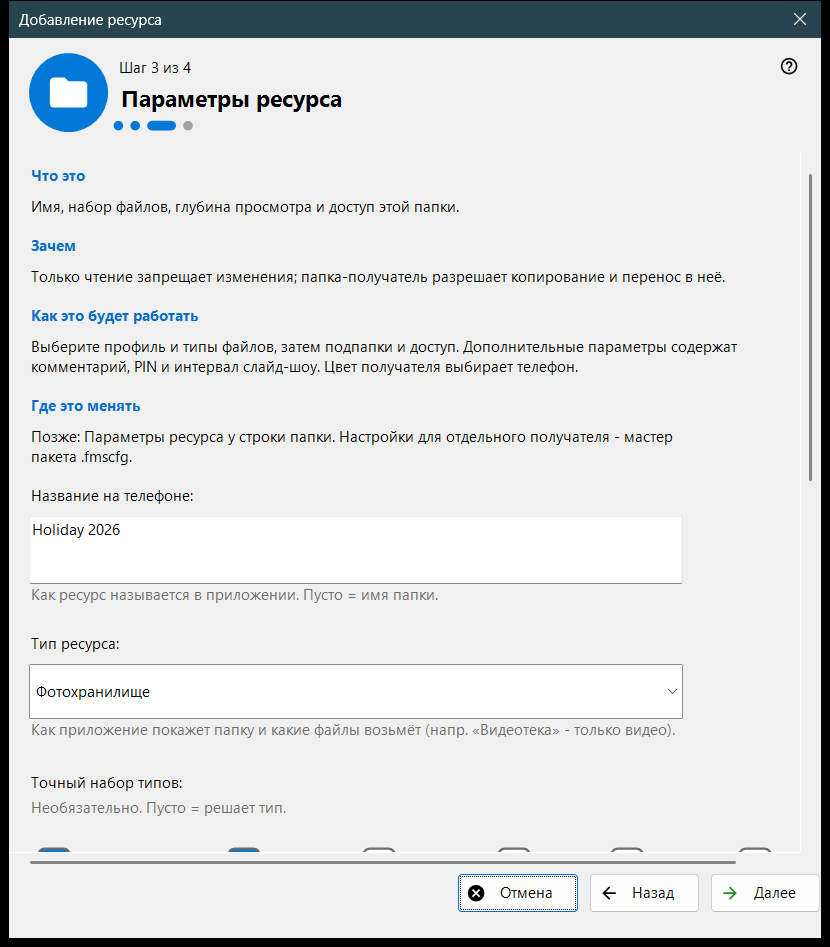
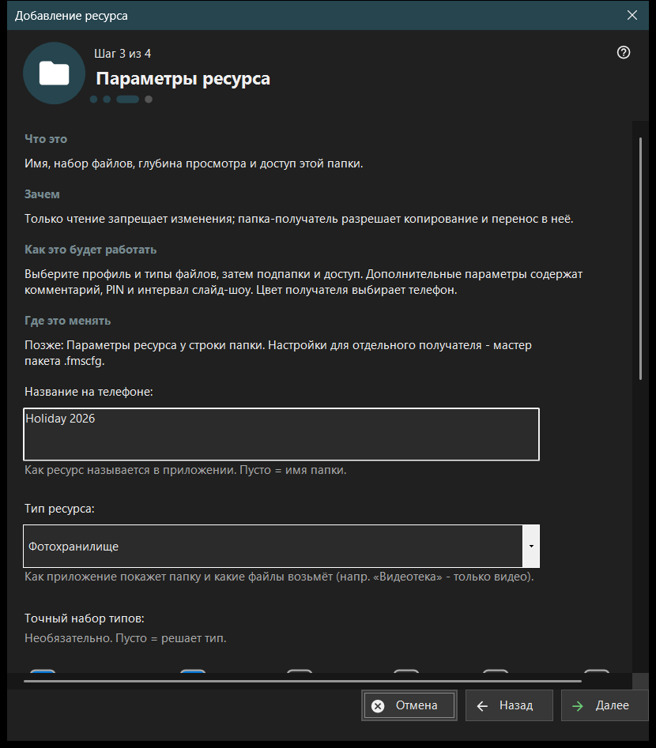

Добавление ресурса
Назначение
Короткий мастер, который добавляет один общий ресурс: папку или уже открытый диск FileDO. Он открывается пунктом «Мастер добавления ресурса..» меню «Добавить..» и из мастера первого запуска, а заканчивается добавлением ресурса в список раздачи.


Порядок действий
- Прочитайте, что такое ресурс, и нажмите «Далее».
- Нажмите «Выбрать папку..» и укажите папку.
- На странице «Параметры ресурса» задайте имя, тип и доступ.
- Проверьте сводку и нажмите «Готово».
- Кнопки последней страницы покажут QR-код или откроют настройки.
Элементы окна
Что такое ресурс
Ресурс - это папка или открытый виртуальный диск FileDO, доступный просмотрщику через этот компьютер. Файлы остаются на ПК; телефон просматривает и копирует их по соединению, а галочка в списке папок означает раздачу.
Выбор папки
«Выбрать папку..» открывает обычный выбор папки, «Диски FileDO..» показывает открытые диски. Повторная папка отклоняется сообщением «Эта папка уже в списке.». Диски FileDO выбирайте уже открытыми: мастер не создаёт и не монтирует их.
Параметры ресурса
Название на телефоне, тип, точный набор типов, условия сканирования и доступ. «Только чтение» запрещает изменения, папка-приёмник разрешает копирование и перенос в неё. «Дополнительные параметры» содержат комментарий, PIN и интервал слайд-шоу. Цвет приёмника выбирает телефон.
Ресурс и дальнейшие действия
«Готово» сохраняет параметры и добавляет ресурс; до этого отмена ничего не меняет. Последняя страница сообщает, раздаётся ли ресурс. Если сервер выключен, телефон его не увидит; если раздача не подтверждена, проверьте настройки. «Показать QR-код» открывает код доступа, «Настройки..» - настройки менеджера, «Закрыть» выходит из мастера.
Настройки менеджера · Настройки общего доступа SFTP · Настройки сервера обмена